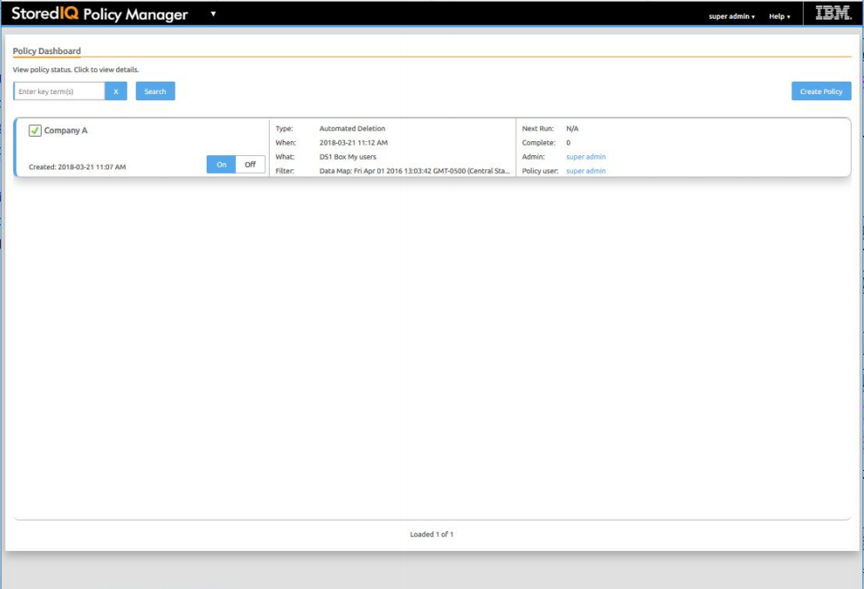

IBM StoredIQ Policy Manager
IBM StoredIQ Policy Manager allows users to run mature policies and processes at scale across a wider range of data.
The users can define and run systemwide policies, focusing on the execution of the process rather than understanding or reviewing affected data objects. Additionally, with reports of IBM StoredIQ Policy Manager, you can record what actions were conducted, when they were conducted, and what data was affected by the policy's execution.